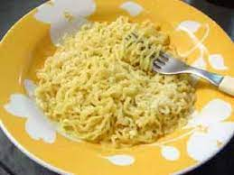

Como fazer miojo?
te ensinar passo a passo como fazer miojo de forma gostosa e segura

1- Primeiro você coloca água dentro de uma panela e coloca no fogo esperando até ferver
2- Depois você coloca o miojo cru dentro da água quente
3- Você vai esperar até o miojo ficar mole e estiver desgrudado
E por fim seu miojo está pronto para ser servido
